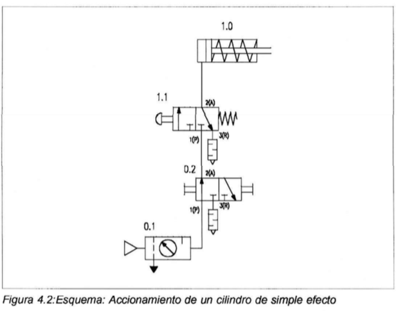
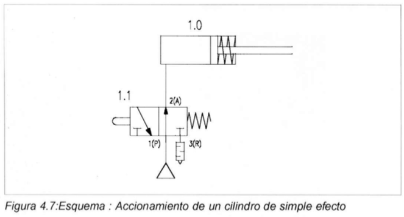
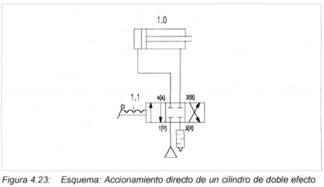

Capítulo 4. Circuitos neumáticos
Para efectuar el montaje de los sistemas control, debe disponerse de un puesto de trabajo fijo. La alimentación de aire comprimido puede estar a cargo de un compresor móvil con silenciados (máximo 800kPa = 8 bar).
La presión de funcionamiento deberá ser, como máximo, de \(P = 600kPa = 6 bar\)
Para un funcionamiento óptimo, la presión de funcionamiento del sistema de control deberá ser máximo \(P=500kPa = 5\) bar con aire sin lubricar.
Estructura de un sistema neumático

Esquema de conexiones del sistema
Código de señalización de los componentes
- Número del equipo empezando con 1; sólo se utiliza cuando el circuito de mando completo consta de más de un equipo.
- Número del circuito de mando comenzando con 1; todos los accesorios con 0.
- Señalización de los componentes por medio de letras
- Número de los componentes comenzando con 1
Esquema de conexiones
| Descripción | Nomenclatura |
|---|---|
| De arriba hacia abajo | |
| Elemento de trabajo | 1A |
| Elemento de mando | 1V2 |
| Elemento de procesamiento | 1V1 |
| Elemento de entrada | 1S1,1S2,1S3 |
| Elemento de alimentación | 0Z,0S |

Nomenclatura
En el siguiente documento se detalla las diferentes nomenclaturas para el nombramiento de los elementos en un circuito neumático.
Armando circuitos neumáticos
Armar los siguientes circuitos neumáticos para irse familiarizando con el software de simulación FluidSIM, conocer la ubicación de los elementos neumáticos y eléctricos. Configuración de válvulas y más elementos.
Válvulas de control






Válvulas combinacionales